[1]:
import quanguru as qg
import numpy as np
22 - Step 1 : System Description#
This tutorial demonstrates all the functionalities provided by the QuantumSystem and QTerm class.
Name and aliases#
[2]:
qsys = qg.QuantumSystem(alias='firstSystem')
print(qsys.name, qsys.alias, qsys._firstTerm.name)
QuantumSystem1 ['firstSystem'] QTerm1
Hamiltonians#
With simple terms#
[3]:
q0 = qg.QuantumSystem(dimension=4, frequency=1/np.sqrt(2), operator=qg.create)
secondTerm = q0.createTerm(operator=qg.destroy, frequency=1/np.sqrt(2))
print(q0.totalHamiltonian.A)
[[0. 0.70710678 0. 0. ]
[0.70710678 0. 1. 0. ]
[0. 1. 0. 1.22474487]
[0. 0. 1.22474487 0. ]]
[4]:
q0.dimension = 2
q0.frequency = q0._firstTerm.frequency
q0.operator = q0._firstTerm.operator
q0.order = q0._firstTerm.order
q0._freeMatrix = q0._firstTerm._freeMatrix
secondTerm.frequency = secondTerm.frequency
secondTerm.operator = secondTerm.operator
secondTerm.order = secondTerm.order
print(q0.totalHamiltonian.A)
[[0. 0.70710678]
[0.70710678 0. ]]
With non-trivial terms#
[5]:
w1 = 1
w2 = 1
dimension = 5
powOfDestroy = 3
powOfCreate = 2
q1 = qg.QuantumSystem(dimension=dimension, operator=qg.number, frequency=w1)
# for the second term, we need to create the term object explicitly then add it to our quantum system
# want this to be intentional
# create term raises an error
# nonLinearTerm = q1.createTerm(qSystem=(q1, q1), operator=(qg.destroy, qg.create), frequency=w2, order=(powOfDestroy, powOfCreate), superSys=q1)
nonLinearTerm = qg.QTerm(qSystem=(q1, q1), operator=(qg.destroy, qg.create), frequency=w2, order=(powOfDestroy, powOfCreate), superSys=q1)
q1.addTerms(nonLinearTerm)
print(q1.totalHamiltonian.A)
[[ 0. 6. 0. 0. 0. ]
[ 0. 1. 16.97056275 0. 0. ]
[ 0. 0. 2. 0. 0. ]
[ 0. 0. 0. 3. 0. ]
[ 0. 0. 0. 0. 4. ]]
What if we have only one term ?#
$ H_{2} = \omega_{2} a^{3} (a{:nbsphinx-math:dagger`})`{2}$
[6]:
q2 = qg.QuantumSystem(dimension=dimension, frequency=w2)
# we first modify the qSystem of the _firstTerm
# it is crucial that you do this before setting the operator and/or order
# otherwise it will raise an error
q2._firstTerm.qSystem = (q2, q2)
q2.operator = (qg.destroy, qg.create)
q2.order = (powOfDestroy, powOfCreate)
print(q2.totalHamiltonian.A)
[[ 0. 6. 0. 0. 0. ]
[ 0. 0. 16.97056275 0. 0. ]
[ 0. 0. 0. 0. 0. ]
[ 0. 0. 0. 0. 0. ]
[ 0. 0. 0. 0. 0. ]]
Why such a strange syntax ?#
Because it enable us to extend similar syntax to couplings, such as the 3 body coupling in below Hamiltonian (for a composite system with 3 subsystems, a spin-1/2, a spin-2, another system with dimension 6). I wrote to represent the tensor product with identity operators, which converts bare operators to composite operators.
$ H_{3} = \omega{1}:nbsphinx-math:`sigma`{z}:nbsphinx-math:otimes `:nbsphinx-math:mathbb{1}` \otimes `:nbsphinx-math:mathbb{1}` + \mathbb{1} \otimes `:nbsphinx-math:omega`{2}J{z}^{2}:nbsphinx-math:otimes `:nbsphinx-math:mathbb{1}` + \mathbb{1} \otimes `:nbsphinx-math:mathbb{1}`:nbsphinx-math:otimes `:nbsphinx-math:omega`{3}a^:nbsphinx-math:`dagger `a + :nbsphinx-math:`omega`{4}(\sigma{+}:nbsphinx-math:`otimes `(J{x}J_{y}) \otimes `(a^{3} (a\ :sup:`{:nbsphinx-math:dagger`})`{2}))$
Special classes for common systems#
Cavity (will implement a maxPhoton attribute) defaults its first term operator to the number
Spin implements a jValue attribute and defaults the first term operator to J_z
Qubit is the special case of Spin with jValue=0.5 (ie dimension=2)
[7]:
w1, w2, w3, w4 = 1, 1, 1, 1
spinJ = 2
thirdDim = 6
[8]:
qubit = qg.Qubit(frequency=w1, alias='subSys1')
spin2 = qg.Spin(jValue=spinJ, frequency=w2, order=2, alias='subSys2')
cavity = qg.Cavity(dimension=thirdDim, frequency=w3, alias='subSys3')
qComp = qubit + spin2 + cavity # order of this sum is important. It maps to the order of identity and other operators above
couplingTerm = qComp.createTerm(frequency=w4,
operator=(qg.sigmap, qg.Jx, qg.Jy, qg.destroy, qg.create),
order=(1, 1, 1, 3, 2),
qSystem=(qubit, spin2, spin2, cavity, cavity),
alias='couplingTerm')
# alias is kwargs
print(qComp.totalHamiltonian.A)
[[4.5+0.j 0. +0.j 0. +0.j ... 0. +0.j 0. +0.j 0. +0.j]
[0. +0.j 5.5+0.j 0. +0.j ... 0. +0.j 0. +0.j 0. +0.j]
[0. +0.j 0. +0.j 6.5+0.j ... 0. +0.j 0. +0.j 0. +0.j]
...
[0. +0.j 0. +0.j 0. +0.j ... 6.5+0.j 0. +0.j 0. +0.j]
[0. +0.j 0. +0.j 0. +0.j ... 0. +0.j 7.5+0.j 0. +0.j]
[0. +0.j 0. +0.j 0. +0.j ... 0. +0.j 0. +0.j 8.5+0.j]]
[9]:
print(couplingTerm.alias)
print(couplingTerm.qSystem, couplingTerm.superSys, couplingTerm.subSys, sep='\n')
['couplingTerm']
[<quanguru.classes.QSystem.Qubit object at 0x7fb10323e540>, <quanguru.classes.QSystem.Spin object at 0x7fb10323e840>, <quanguru.classes.QSystem.Spin object at 0x7fb10323e840>, <quanguru.classes.QSystem.Cavity object at 0x7fb10323ba90>, <quanguru.classes.QSystem.Cavity object at 0x7fb10323ba90>]
QuantumSystem5
{'_QTerm5': <quanguru.classes.QTerms.QTerm object at 0x7fb103151a90>, '_QTerm6': <quanguru.classes.QTerms.QTerm object at 0x7fb103151b40>, '_QTerm7': <quanguru.classes.QTerms.QTerm object at 0x7fb103151bf0>, '_QTerm8': <quanguru.classes.QTerms.QTerm object at 0x7fb103151ca0>, '_QTerm9': <quanguru.classes.QTerms.QTerm object at 0x7fb103151d50>}
TimeDependent term#
where

and
[10]:
qub1 = qg.QuantumSystem(dimension=2, operator=qg.sigmaz)
term2 = qub1.createTerm(operator=qg.sigmax, alias='term2')
def f1(qsys, time):
qsys.frequency = np.sin(time)
qub1._firstTerm.timeDependency = f1
def f2(qsys, time):
qsys.frequency = np.cos(time)**2
term2.timeDependency = f2
qub1._timeDependency(0)
print(qub1._firstTerm.frequency, term2.frequency)
0 1.0
Terms and sub-systems#
terms and subSys are aliasDict
[11]:
print(qComp.terms, qComp.subSys, qubit.terms, spin2.terms, cavity.terms, sep='\n\n')
{'QTerm10': <quanguru.classes.QTerms.QTerm object at 0x7fb1031519e0>}
{'Qubit1': <quanguru.classes.QSystem.Qubit object at 0x7fb10323e540>, 'Spin1': <quanguru.classes.QSystem.Spin object at 0x7fb10323e840>, 'Cavity1': <quanguru.classes.QSystem.Cavity object at 0x7fb10323ba90>}
{'QTerm7': <quanguru.classes.QTerms.QTerm object at 0x7fb1031c6e00>}
{'QTerm8': <quanguru.classes.QTerms.QTerm object at 0x7fb10314ad50>}
{'QTerm9': <quanguru.classes.QTerms.QTerm object at 0x7fb10314dbf0>}
[12]:
print(qComp._termHamiltonian.A, qComp._subSysHamiltonian.A)
[[0.+0.j 0.+0.j 0.+0.j ... 0.+0.j 0.+0.j 0.+0.j]
[0.+0.j 0.+0.j 0.+0.j ... 0.+0.j 0.+0.j 0.+0.j]
[0.+0.j 0.+0.j 0.+0.j ... 0.+0.j 0.+0.j 0.+0.j]
...
[0.+0.j 0.+0.j 0.+0.j ... 0.+0.j 0.+0.j 0.+0.j]
[0.+0.j 0.+0.j 0.+0.j ... 0.+0.j 0.+0.j 0.+0.j]
[0.+0.j 0.+0.j 0.+0.j ... 0.+0.j 0.+0.j 0.+0.j]] [[4.5 0. 0. ... 0. 0. 0. ]
[0. 5.5 0. ... 0. 0. 0. ]
[0. 0. 6.5 ... 0. 0. 0. ]
...
[0. 0. 0. ... 6.5 0. 0. ]
[0. 0. 0. ... 0. 7.5 0. ]
[0. 0. 0. ... 0. 0. 8.5]]
Dimension information#
[13]:
print(qComp.subSysDimensions, qubit.dimension, spin2.dimension, cavity.dimension)
[2, 5, 6] 2 5 6
[14]:
print(spin2._totalDim, spin2.dimension, spin2._dimsAfter, spin2._dimsBefore)
60 5 6 2
composite operators#
[15]:
spin2._compositeOperator = qg.Jx
print(spin2._compositeOperator[qg.Jx].shape)
spin2.jValue = 1
print(spin2._totalDim, spin2.dimension, spin2._dimsAfter, spin2._dimsBefore)
print(spin2._compositeOperator[qg.Jx].shape)
cavity.dimension = 2
print(spin2._totalDim, spin2.dimension, spin2._dimsAfter, spin2._dimsBefore)
print(spin2._compositeOperator[qg.Jx].shape)
(60, 60)
36 3 6 2
(36, 36)
12 3 2 2
(12, 12)
matrix re-creations#
[16]:
newSys = qg.QuantumSystem(dimension=2, operator=qg.create, frequency=1)
print(newSys._paramBoundBase__matrix)
None
[17]:
print(newSys.totalHamiltonian.A, newSys.totalHamiltonian is newSys._paramBoundBase__matrix)
[[0. 0.]
[1. 0.]] True
[18]:
newSys.dimension = 4
print(newSys._paramBoundBase__matrix)
print(newSys.totalHamiltonian.A, newSys.totalHamiltonian is newSys._paramBoundBase__matrix)
None
[[0. 0. 0. 0. ]
[1. 0. 0. 0. ]
[0. 1.41421356 0. 0. ]
[0. 0. 1.73205081 0. ]] True
[19]:
newSys.dimension = 4
print(newSys._paramBoundBase__matrix)
(1, 0) 1.0
(2, 1) 1.4142135623730951
(3, 2) 1.7320508075688772
hc of __matrix#
[20]:
print(newSys._hc.A, newSys.totalHamiltonian.A, sep='\n')
[[0. 1. 0. 0. ]
[0. 0. 1.41421356 0. ]
[0. 0. 0. 1.73205081]
[0. 0. 0. 0. ]]
[[0. 0. 0. 0. ]
[1. 0. 0. 0. ]
[0. 1.41421356 0. 0. ]
[0. 0. 1.73205081 0. ]]
[21]:
newSys.dimension = 5
print(newSys._firstTerm._QTerm__HamiltonianTerm, newSys._firstTerm._paramBoundBase__matrix, sep='\n\n')
print(newSys._firstTerm.totalHamiltonian.A, newSys._firstTerm._paramBoundBase__matrix, sep='\n\n')
(1, 0) 1.0
(2, 1) 1.4142135623730951
(3, 2) 1.7320508075688772
None
[[0. 0. 0. 0. 0. ]
[1. 0. 0. 0. 0. ]
[0. 1.41421356 0. 0. 0. ]
[0. 0. 1.73205081 0. 0. ]
[0. 0. 0. 2. 0. ]]
(1, 0) 1.0
(2, 1) 1.4142135623730951
(3, 2) 1.7320508075688772
(4, 3) 2.0
[22]:
newSys.frequency = 2
print(newSys._paramUpdated, newSys._firstTerm._paramUpdated)
print(newSys._firstTerm._QTerm__HamiltonianTerm, newSys._firstTerm._paramBoundBase__matrix, sep='\n\n')
newSys._firstTerm.totalHamiltonian
newSys.frequency = 2
print(newSys._paramUpdated, newSys._firstTerm._paramUpdated)
newSys.totalHamiltonian
print(newSys._paramUpdated, newSys._firstTerm._paramUpdated)
True True
(1, 0) 1.0
(2, 1) 1.4142135623730951
(3, 2) 1.7320508075688772
(4, 3) 2.0
(1, 0) 1.0
(2, 1) 1.4142135623730951
(3, 2) 1.7320508075688772
(4, 3) 2.0
True False
False False
Composite system information#
[23]:
print(qComp._isComposite, qubit._isComposite, spin2._isComposite, cavity._isComposite)
True False False False
[24]:
print(qComp.ind, qubit.ind, spin2.ind, cavity.ind)
0 0 1 2
[25]:
qCompCopy = qComp.copy()
print(qCompCopy.terms, qCompCopy.subSys, sep='\n')
print(np.allclose(qCompCopy.totalHamiltonian.A, qComp.totalHamiltonian.A))
{'QTerm17': <quanguru.classes.QTerms.QTerm object at 0x7fb10317a9e0>}
{'Qubit2': <quanguru.classes.QSystem.Qubit object at 0x7fb10323ea40>, 'Spin2': <quanguru.classes.QSystem.Spin object at 0x7fb10323eb40>, 'Cavity2': <quanguru.classes.QSystem.Cavity object at 0x7fb103177040>}
True
[26]:
qComp.removeSubSys(spin2)
print(qComp.terms, qComp.subSys, qComp.subSysDimensions, sep='\n')
{}
{'Qubit1': <quanguru.classes.QSystem.Qubit object at 0x7fb10323e540>, 'Cavity1': <quanguru.classes.QSystem.Cavity object at 0x7fb10323ba90>}
[2, 2]
[27]:
qComp.resetTerms(), qComp.resetSubSys()
print(qComp.terms, qComp.subSys, qComp.subSysDimensions, sep='\n')
{}
{}
[]
[28]:
print(couplingTerm.subSys.keys())
internalTerms = list(couplingTerm.subSys.values())
couplingTerm.removeSubSys('_QTerm7')
print(couplingTerm.subSys.keys())
dict_keys(['_QTerm5', '_QTerm6', '_QTerm7', '_QTerm8', '_QTerm9'])
dict_keys(['_QTerm5', '_QTerm6', '_QTerm8', '_QTerm9'])
[29]:
couplingTerm.resetSubSys()
print(couplingTerm.subSys.keys())
couplingTerm.subSys = internalTerms
print(couplingTerm.subSys.keys())
dict_keys([])
dict_keys(['_QTerm5', '_QTerm6', '_QTerm7', '_QTerm8', '_QTerm9'])
[30]:
qComp.subSys = [qubit, spin2, cavity]
print(qComp.subSys, qComp.name)
qComp += 4*qg.QuantumSystem(dimension=2)
print(qComp.subSys)
{'Qubit1': <quanguru.classes.QSystem.Qubit object at 0x7fb10323e540>, 'Spin1': <quanguru.classes.QSystem.Spin object at 0x7fb10323e840>, 'Cavity1': <quanguru.classes.QSystem.Cavity object at 0x7fb10323ba90>} QuantumSystem5
{'QuantumSystem5': <quanguru.classes.QSystem.QuantumSystem object at 0x7fb10323bb80>, 'QuantumSystem10': <quanguru.classes.QSystem.QuantumSystem object at 0x7fb103177220>}
[31]:
qComp -= qubit
print(qComp.subSys)
print(qComp.subSys['QuantumSystem5'].subSys)
print(qComp.subSys['QuantumSystem10'].subSys)
{'QuantumSystem5': <quanguru.classes.QSystem.QuantumSystem object at 0x7fb10323bb80>, 'QuantumSystem10': <quanguru.classes.QSystem.QuantumSystem object at 0x7fb103177220>}
{'Spin1': <quanguru.classes.QSystem.Spin object at 0x7fb10323e840>, 'Cavity1': <quanguru.classes.QSystem.Cavity object at 0x7fb10323ba90>}
{'QuantumSystem9': <quanguru.classes.QSystem.QuantumSystem object at 0x7fb103177130>, 'QuantumSystem11': <quanguru.classes.QSystem.QuantumSystem object at 0x7fb10323bd60>, 'QuantumSystem12': <quanguru.classes.QSystem.QuantumSystem object at 0x7fb103177310>, 'QuantumSystem13': <quanguru.classes.QSystem.QuantumSystem object at 0x7fb1031774f0>}
Initial state#
various types of initial state input: single number, list of numbers, dictionary (inpCoef False/True), and matrix (with consistent dimension)#
Before diving into the examples, lets first define certain conventions and notations representing the eigenvectors of  operator.
operator.
Matrix form of operator is:
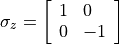
and its eigenvectors (with the corresponding eigenvalues) are
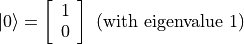
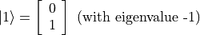
The labels, 0 and 1, of the ket states here represent the position of the 1 in the column matrices. In other words, the  has 1 at row 0, and the
has 1 at row 0, and the  has 1 at row 1. This convention extends naturally and is used for higher dimensional systems such as larger spins or harmonic oscillators. We will refer these as
has 1 at row 1. This convention extends naturally and is used for higher dimensional systems such as larger spins or harmonic oscillators. We will refer these as basis states, and the basis method of QuantumToolbox can be used for the creation of such states, but, here we focus on creating the initial
states through the Qubit object.
1. Pure States#
1.1 If Initial state is a basis state#
In order to set or , we simply give the respective number as input for the initialState
[32]:
qub = qg.Qubit(frequency=1)
qub.initialState = 0
print(qub.initialState.A)
qub.initialState = 1
print(qub.initialState.A)
[[1.]
[0.]]
[[0.]
[1.]]
1.2 If Initial state is a superposition state#
If we want to set some super-position of and as the initial state, we can do this in various different ways depending on the superposition state we want to set.
1.2.1 If Initial state is an equal superposition state#
The first method is for the equal superposition state
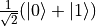
In this special case, we simply give a list ![[1, 0]](../../../_images/math/e51cc6f731b282d5ed7534a42e7553eea460f586.png) (or
(or ![[0, 1]](../../../_images/math/8027137b3073a7f5ca4e45ba2d030dcff154eca4.png) the order is not important) of the states, and it is used to create the equal superposition. Note that equal superposition here does not mean equal superposition of every basis states, it just means equal superposition of the given input basis states. In other words, for higher dimensional systems, you can create an equal superposition of any number of basis states. For example for a 5 dimensional system,
the order is not important) of the states, and it is used to create the equal superposition. Note that equal superposition here does not mean equal superposition of every basis states, it just means equal superposition of the given input basis states. In other words, for higher dimensional systems, you can create an equal superposition of any number of basis states. For example for a 5 dimensional system,
![[1, 0, 3]](../../../_images/math/d3fbdb978496e451e2867a6c88d91fee4d1c85a4.png) will create equal superposition of these three basis states.
will create equal superposition of these three basis states.
[33]:
qub.initialState = [1, 0]
print(qub.initialState.A)
[[0.70710678]
[0.70710678]]
1.2.2 If Initial state is an arbitrary superposition state#
The second method for creating a superposition state is by using a dictionary, where key:value pairs represent the basis-state:population/coefficient.
population/coefficient here means that there are also two different ways for this approach.
Consider the following superposition state

where  are the complex probability amplitudes, and 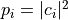 are the population, satisfying the normalization condition
are the complex probability amplitudes, and 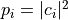 are the population, satisfying the normalization condition  .
.
Now, we can create our superposition state either by using the population or coefficient.
1.2.2.1 Initial state using the populations#
Lets cover the population first, which is the default method. Below is an example where we want 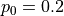 and 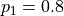. Note that the order of the key:value pairs does not matter, meaning {0:0.2, 1:0.8} is the same as {1:0.8, 0:0.2}.
[34]:
qub.initialState = {0:0.2, 1:0.8}
print(qub.initialState.A)
# let's also convert this initial state into density matrix to confirm:
# (i) the populations and (ii) its purity
denMat = qg.densityMatrix(qub.initialState)
print(denMat.A, qg.purity(denMat), sep='\n')
[[0.4472136 ]
[0.89442719]]
[[0.2 0.4]
[0.4 0.8]]
1.0000000000000009
Also note that the populations can be relative, meaning the input does not have to sum to 1, and they will be normalized to sum to one. For example, if we input 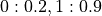, the total population is 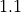. Therefore, it will be normalized to 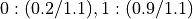.
[35]:
qub.initialState = {0:0.2, 1:0.9}
print(qub.initialState.A)
denMat = qg.densityMatrix(qub.initialState)
print(denMat.A, qg.purity(denMat), 0.9/1.1, 0.2/1.1, sep='\n')
[[0.42640143]
[0.90453403]]
[[0.18181818 0.38569461]
[0.38569461 0.81818182]]
1.0000000000000007
0.8181818181818181
0.18181818181818182
1.2.2.2 If the relative phases are important#
Obviously, the population approach ignores the relative phase between the coefficients, which might be important for us. In such a case, we can give the key:value value pairs as state:coefficient, but we also need to set _inpCoef to True as below, where we compare the population and coefficient approach. Notice that both cases below creates 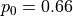 and 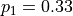, but the first one uses the complex probability amplitudes introducing a
relative phase, which is observed as the complex parts of the off-diagonal elements of the density matrix.
[36]:
qub._inpCoef = True
qub.initialState = {0:0.2*(1+1j), 1:0.2}
print(qub.initialState.A)
denMat = qg.densityMatrix(qub.initialState)
print(denMat.A, qg.purity(denMat), sep='\n')
qub._inpCoef = False
qub.initialState = {0:0.66, 1:0.33}
print(qub.initialState.A)
denMat = qg.densityMatrix(qub.initialState)
print(denMat.A, qg.purity(denMat), sep='\n')
[[0.57735027+0.57735027j]
[0.57735027+0.j ]]
[[0.66666667+0.j 0.33333333+0.33333333j]
[0.33333333-0.33333333j 0.33333333+0.j ]]
(0.9999999999999989+0j)
[[0.81649658]
[0.57735027]]
[[0.66666667 0.47140452]
[0.47140452 0.33333333]]
1.0
Mixed states or any other arbitrary state#
initialState also accepts a (ket or density) matrix as input, which makes it possible to set any state we want as the initial state. For example, if we want the initial state to be a mixed state, we can create it using the densityMatrix function of QuantumToolbox then set it through again the initialState as below, where we also calculate the purity of each mixed state.
[37]:
mixedState = qg.densityMatrix([qg.basis(2,1), qg.basis(2,0)], [0.5, 0.5])
qub.initialState = mixedState
print(qub.initialState.A, qg.purity(qub.initialState), sep='\n')
mixedState = qg.densityMatrix([qg.basis(2,1), qg.basis(2,0)], [0.25, 0.75])
qub.initialState = mixedState
print(qub.initialState.A, qg.purity(qub.initialState), sep='\n')
[[0.5 0. ]
[0. 0.5]]
0.5
[[0.75 0. ]
[0. 0.25]]
0.625
_createState function pointer for custom initial state creators#
[38]:
def customStateCreator(qsys, inp=None, _maxInput=1):
return qg.superPos(qsys.dimension, inp, not qsys._inpCoef) if _maxInput < qsys.dimension else None
qg.QuantumSystem._createState = customStateCreator
qub.initialState = 0, 1
print(qub.initialState.A)
[[0.70710678]
[0.70710678]]
other aux#
number of
QuantumSysteminstancessetting internal simulation operator parameters directly through self
unitary of internal freeEvolution (_freeEvol) and addProtocol
[39]:
print(qub._instances, qg.Qubit._instances)
print(qg.Qubit._instances, qg.Spin._instances, qg.Cavity._instances, qg.QuantumSystem._instances)
3 3
3 2 2 14
[40]:
qub.simStepSize = 1
print(qub.stepSize)
qub.stepSize = 2
print(qub.stepSize)
1
2
[41]:
qub._freeEvol.unitary() is qub.unitary()
[41]:
True
[ ]: